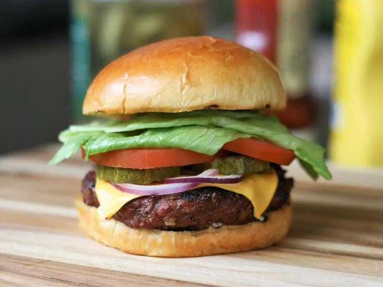

Back Home
Burger

Description
This butter chicken recipe, or chicken makhani, is one of my favorite
Indian dishes. It features a full-flavored sauce that complements the
chicken well. It can be made as mild or spicy as you wish by adjusting the
cayenne. Serve with basmati rice and naan bread.
Ingredients
- 2 pounds extra lean ground-beef
- 1(1 ounce) package dry option soup mix
- 1 egg, lightly beaten
- 2 teaspoons hot pepper sauce
- 2 teaspoons Worcestershire sauce
- 1/4 teaspoon ground black pepper
- 3/4 cup rolled oats
Steps
-
Preheat an outdoor grill for medium high heat and lightly oil grate.
-
In a large bowl, combine beef, onion soup mix, hot sauce and oats. Shape
into 6 patties.
-
Grill patties over medium high heat for 10 to 20 minutes, or to desired
doneness.